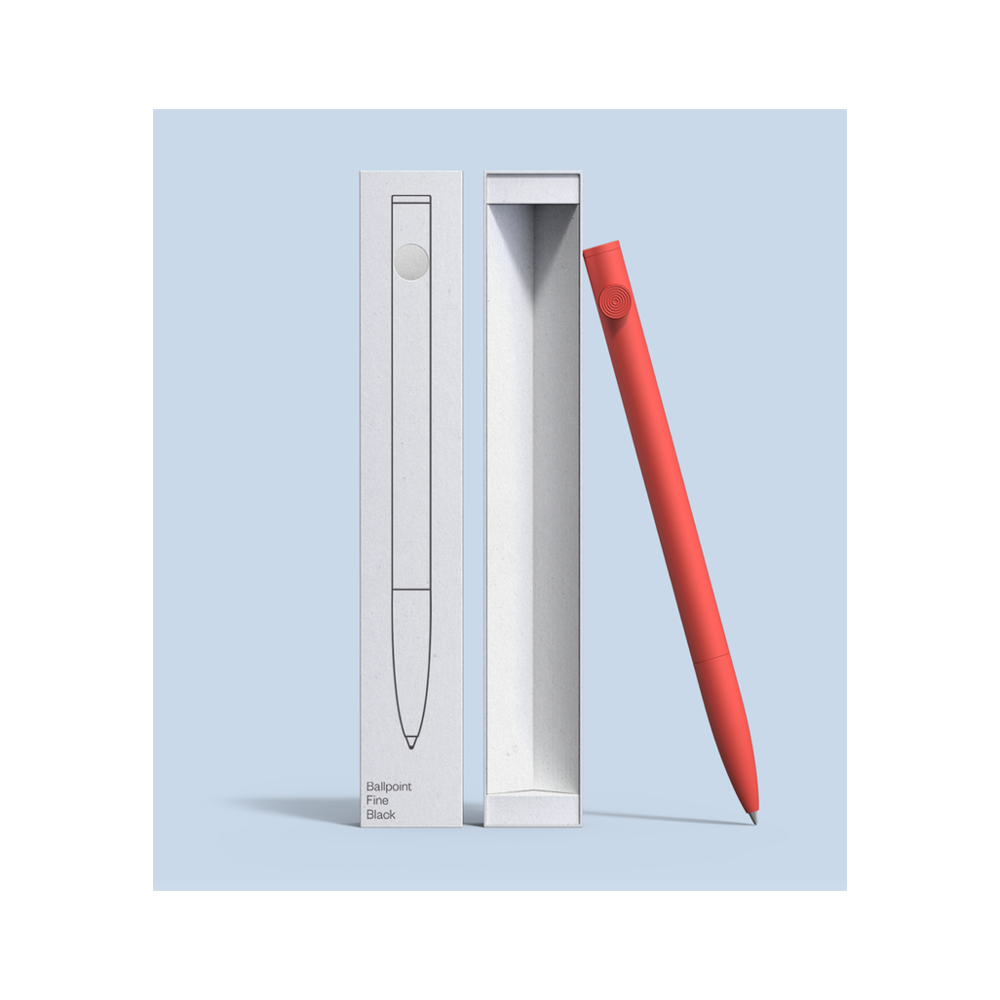

A simple click pen informed by tree branches.
But you can toss it if you want.
The majority of pens in the United States are made from polystyrene plastic - a non-recyclable plastic.
2015
2014
2013
A pen made from recyclable plastic.
But we think you'll want to keep it around.
Feel free to contact us to list Twig pens in your store.
